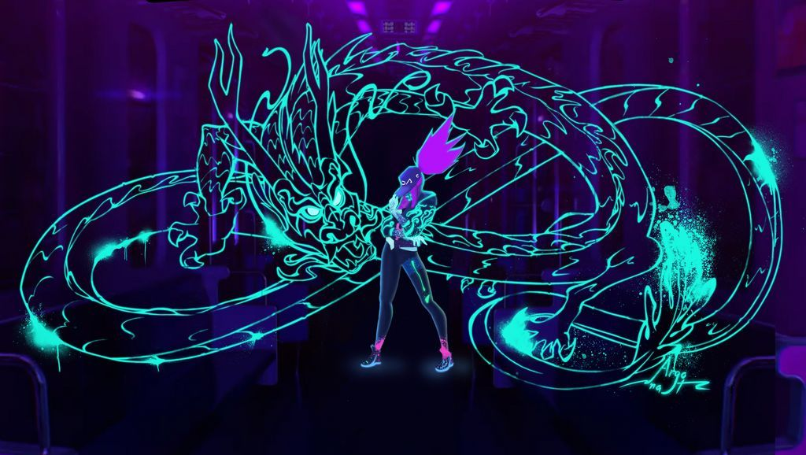

Pascal Charrue, Jérôme Combe et Arnaud Delord, trois passionnés d’animation, fondent leur société en choisissant comme premier nom “Alexandra Lourenco”, dont on ne connaît pas l’origine, pour prendre finalement le nom de “Fortiche” d'après leur état d’esprit à l’époque, avec pour ambition de faire de ce nom une référence mondiale de l’animation.
Parmi les trois fondateurs, Arnaud Delord faisait déjà des clips musicaux, principalement tournés dans la réalité et accompagnée d’effets 3D, Pascal Charrue faisait lui aussi des tests d’animation 3D, mais c’est Jérôme Combe qui donnera au studio sa marque de fabrique, un mélange entre 2D et 3D qu’il mettait déjà en œuvre avant la création de Fortiche, que ce soit pour des projets expérimentaux ou même des publicités commandées par des marques répandues en France.
Les premières années furent difficiles pour le studio d’animation, il a du mal à se faire connaître ce qui contribue à son déficit dès 2010, il s’est d’ailleurs endetté à hauteur de 262 000€ pour pouvoir tenir, il faut alors espérer qu’une commande vienne tout changer.
Le studio réalise son premier grand projet, un clip vidéo de plus de 5 minutes pour une chanson de Gorillaz en collaboration avec la marque de chaussures Converse intitulée “Do Ya Thing”.
Cette collaboration a par la suite amené d’autres marques telles que Coca Cola ou Honda à contacter la société afin qu’elle produise leur propre publicité.
Cette attractivité est fortement due au style d’animation particulier du studio, à la fois adapté à de nombreux univers mais surtout responsable d’une ambiance reconnaissable.
C’est ce qui va les amener à croiser le chemin de l’entreprise qui propulsera le studio au sommet.
Fortiche sort le premier projet d’une longue collaboration avec Riot Games, un studio de jeux vidéo notamment connu pour avoir développé League of Legends, l’un des jeux vidéo les plus populaires au monde.
Il s’agit encore une fois d’un clip vidéo intitulé “Get Jinxed” que le géant du jeu vidéo a commandé pour tester Fortiche et avoir une idée de tout son potentiel, car il a d’énormes projets en réserve pour eux…
Et l’un d’eux sera le clip vidéo de l’hymne de la Coupe du Monde de League of Legends de 2014, l’un des les connus du jeu d’ailleurs, chanté par le groupe Imagine Dragons, aussi de fidèles collaborateurs de Riot Games.
Une animation dynamique et spectaculaire capable de recréer les émotions que transmet la musique est pour les deux studios un facteur du renforcement de leurs relations, donnant naissance à bien d’autres chefs d'œuvre.
Riot Games refait donc appel à Fortiche pour produire un second clip vidéo pour un hymne de Coupe du Monde, cette fois-ci celle de 2018, en parallèle le studio d’animation reçoit des commandes d’autres clients tels que Marvel, géant du cinéma, pour produire quelques épisodes de la série animée Rocket & Groot.
Ils restent cependant principalement en contact avec Riot games, qui en parallèle, à peine un mois plus tard, publie un clip musical pour le groupe KDA, lui-aussi propulsé par le géant du jeu vidéo, pour une musique intitulée “Pop/Stars”, aussi mondialement connue dans la communauté League of Legends.
Ce clip avait d’ailleurs été annoncé pour plus tôt, la communauté en était confuse, il n’était pas du genre de Riot Games d’avoir du retard sur leurs projets, mais à sa sortie, le clip fait l’unanimité: une animation à couper le souffle, des effets créatifs et spectaculaires étaient le résultat d’un travail et d’un talent exceptionnel, et surtout d’une exigence incomparable dans la qualité de leur production, raison pour laquelle le studio a préféré avoir un peu plus de temps pour parfaire son œuvre.
Son œuvre, oui, mais sûrement pas sa pièce maîtresse…
Le 6 novembre 2021 sort sur Netflix “Arcane”, une série animée de 9 épisodes d’environ 40 minutes chacun, basée sur l’univers de League of Legends, car oui c’est encore une fois une initiative de Riot Games.
Ce projet a vu le jour dès 2015, alors que Fortiche venait de faire la démonstration de l’étendue de ses talents, les producteurs artistiques de chez Riot Games avaient pour idée, voire pour nécessité d’approfondir l’histoire des personnages de League of Legends.
Les directeurs du studio, Brandon Beck et Marc Merrill, n’étaient cependant pas tout à fait convaincus de la réalisabilité du projet.
Passer de courts clips vidéo à une série animée entière était pour eux inconcevable, raison pour laquelle ils ont pour la première fois décliné l’idée.
Mais avec un peu de persévérance, ils acceptent pour 2 000$ de faire produire à Fortiche une vidéo de test pour donner un avant goût de ce à quoi un tel projet pourrait ressembler, ce qui fit réaliser à Riot Games que ce pari risqué valait la peine d’être pris.
C’est alors que Fortiche s’est vue agrandir sa force de frappe: deux nouveaux studios sont ouverts à Montpellier et Las Palmas, aux alentours de grandes écoles d’animation, pour accueillir un total de 350 talents.
Au fil des années les épisodes sont produits, le projet est parfois mis en pause, en particulier lors de la production du pilote, le tout premier épisode, fait pour donner envie au spectateur de regarder la suite de la série, car c’est à ce moment là qu’il est encore temps d’abandonner l’idée.
Mais ce n’est sûrement pas une option à prendre ici, le potentiel qu’a le projet est bien trop important pour ne pas tenter le coup.
Cette décision payera 6 ans plus tard, quand Arcane obtiendra 9 Emmy Awards, plus haute distinction du monde de l’animation.
Il est possible de revivre l’intégralité de la réalisation de ce projet dans “Arcane: Bridging the Rift" disponible sur la chaîne officielle de League of Legends.
Aujourd’hui Arcane est considéré comme un monument de l’animation, une œuvre d’art dont la suite est officiellement en développement et est prévue au plus tôt en 2023 - 2024.